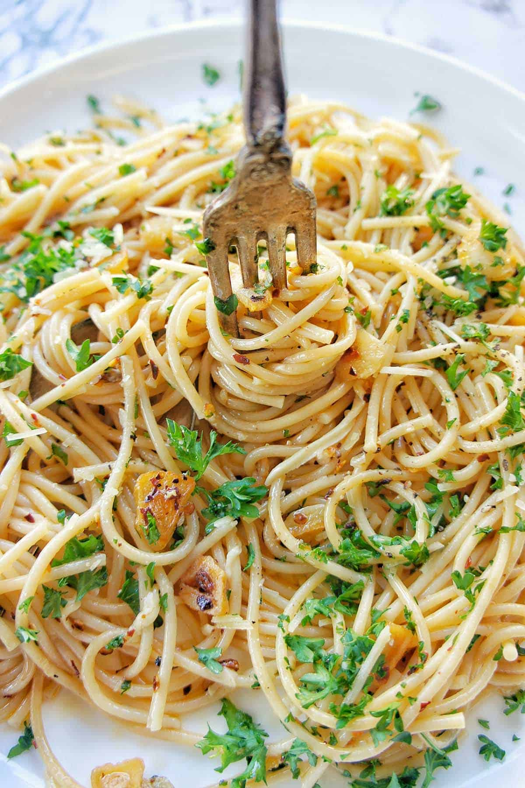

Garlic Spaghetti

Dish Description
A simple yet flavorful garlic spaghetti, tossed in olive oil and infused with aromatic sautéed garlic, finished with a hint of chili flakes and fresh parsley.
Ingredients
- 200g spaghetti
- 4–6 garlic cloves (thinly sliced or minced)
- ¼ cup olive oil
- ½ teaspoon red chili flakes (adjust to taste)
- ¼ cup fresh parsley (chopped)
- Salt (to taste)
- Black pepper (to taste)
- ¼ cup grated Parmesan (optional)
- Lemon zest or juice (optional, for extra freshness)
Steps
- Cook the Pasta: Boil a large pot of salted water and cook the spaghetti until al dente. Reserve about ½ cup of pasta water, then drain the rest.
- Sauté the Garlic: In a large pan, heat olive oil over medium-low heat. Add the sliced garlic and sauté until golden and fragrant (about 1–2 minutes). Be careful not to burn it.
- Add Chili Flakes: Stir in the red chili flakes and cook for a few seconds to release their flavor.
- Combine with Pasta: Toss in the drained spaghetti and mix well, adding a little reserved pasta water to help coat the noodles in the garlicky oil.
- Season & Garnish: Add salt, black pepper, and chopped parsley. Toss everything together and remove from heat.
- Serve: Garnish with grated Parmesan (if using) and a touch of lemon zest or juice for extra freshness.
More Recipes
Vist the home page for more dishes!